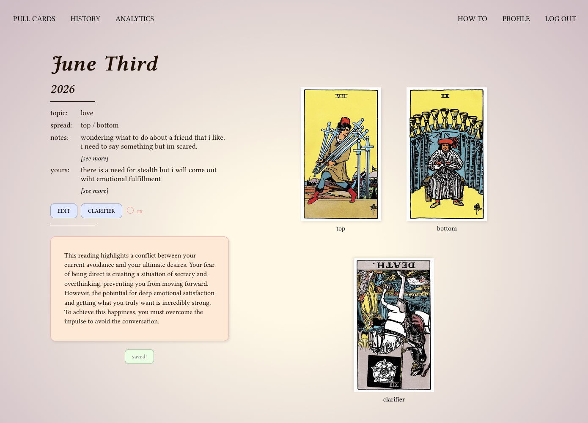

~ TAROLYTICS ~
As someone who pulls tarot cards as a daily ritual, I wanted to build a tool to help track tarot readings and provide card by card analytics. Tarolytics allows users to input and save readings from the physical world, as well as generate new readings in the app. Each reading a user inputs is saved to a PostgreSQL database where it can be queried for analytics information: how often a specific card is being pulled, its reversal rate, does it commonly appear with any other cards, what notes has the user previously saved with this card.
Tarolytics also generates a display page for each reading where the user can pull clarifier cards (cards to clarify the original meaning of the reading) and queries an LLM for a reading analysis based on the reading topic and notes the user input.

Tarolytics also generates a display page for each reading where the user can pull clarifier cards (cards to clarify the original meaning of the reading) and queries an LLM for a reading analysis based on the reading topic and notes the user input Tarolytics also provides the user with their astrological chart information and uses this to generate informed personalized insights on the users tarot readings.